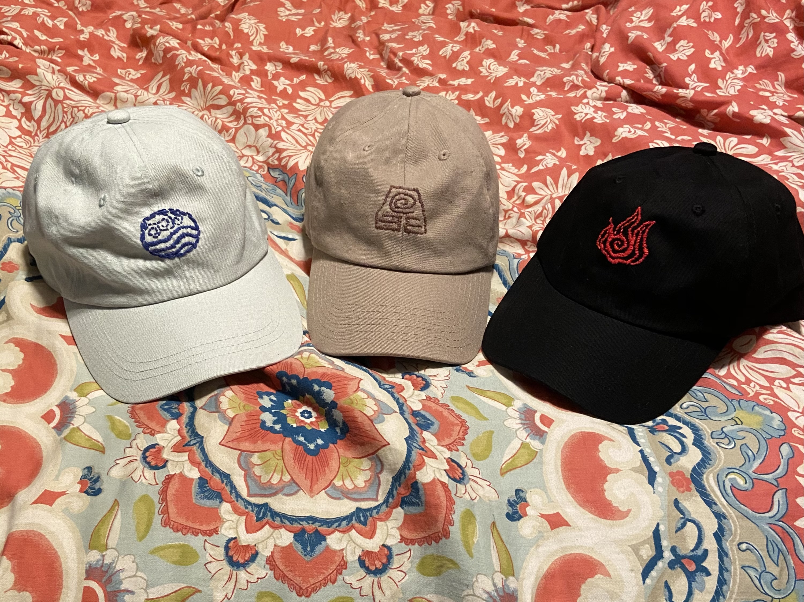
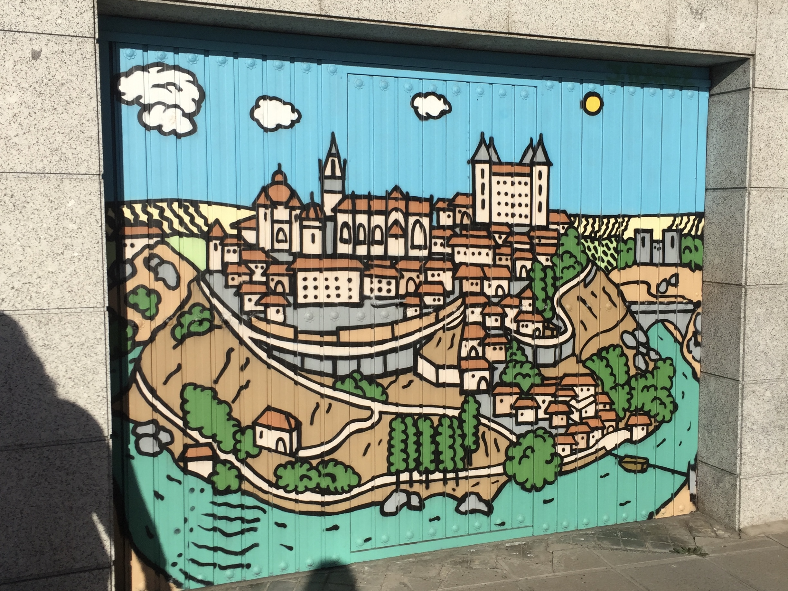
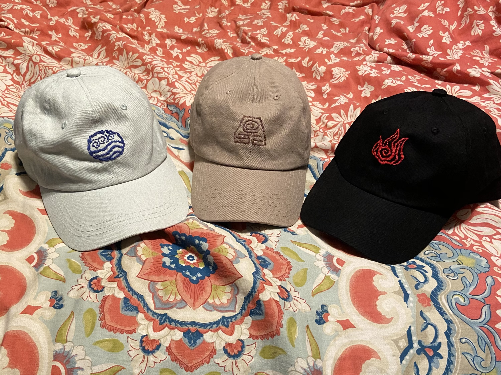
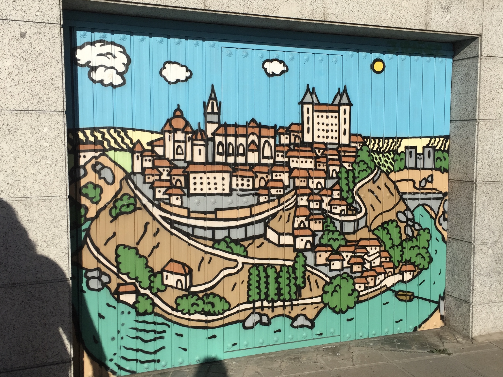
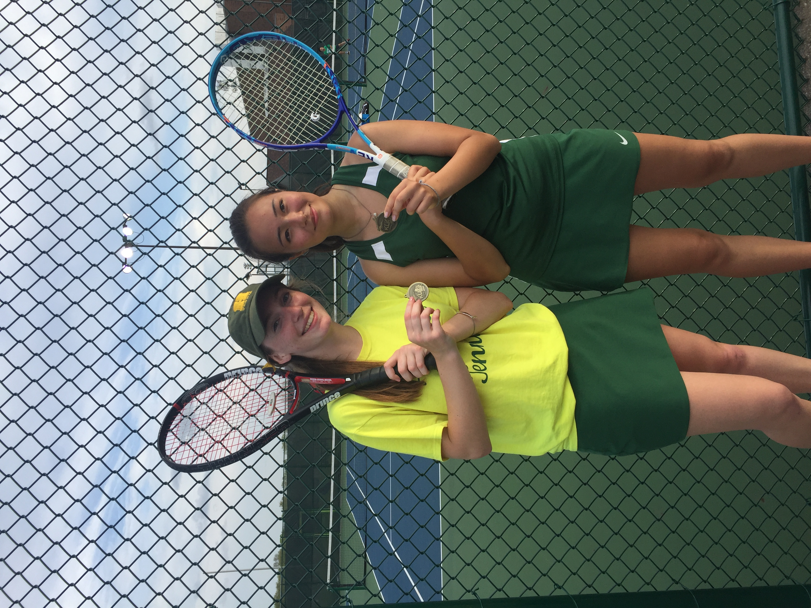
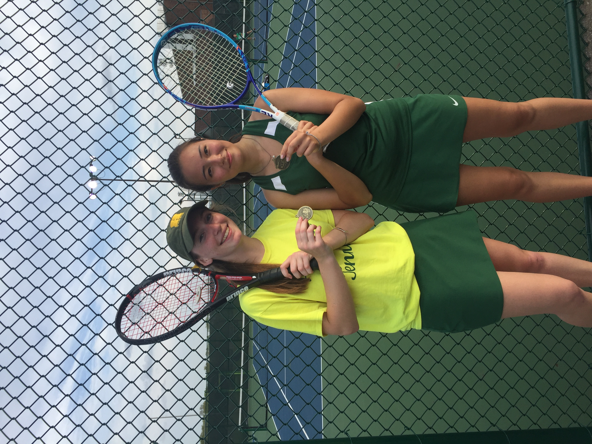

Zoe Zemper
Hi I'm Zoe and I'm a junior dual degree student at the University of Michigan. I am studying Information Analysis through the School of Information, and I'm studying Cognitive Science and the Environment with a focus on Decision-making in the School of Literature, Science, and the Arts. I'm passionate about using data-driven decisions to create innovative solutions to world problems. Scroll through to learn a bit more about me.

About Me

 




 

Here is my lovely pug Theo who I adore, I run his instagram account @sweettheothepug and spend way too much time designing his posts.
I like to listen to musicals in my freetime, here's me with one of my favorite musical characters, Beetlejuice!
I like to watch old movies, one of my favorite classics is Jurassic Park!
Here is me with my some of my friends :)
A hobby of mine I picked up recently is sewing and embroidering, here are 3 hats I embroidered for my family this summer.
I love to travel and would love to do more of it in the future. Here is a snapshot from a trip to Spain.
I love to raise succulents, here is a greenhouse full of them that inspires my collection.
Here is an ideallic image of me with my family on the beach.
I love playing tennis! This is me exhausted after winning a conference match.